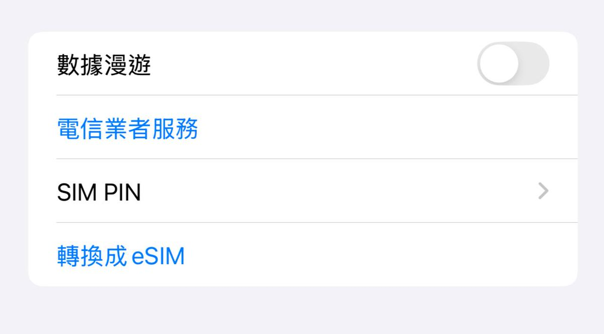
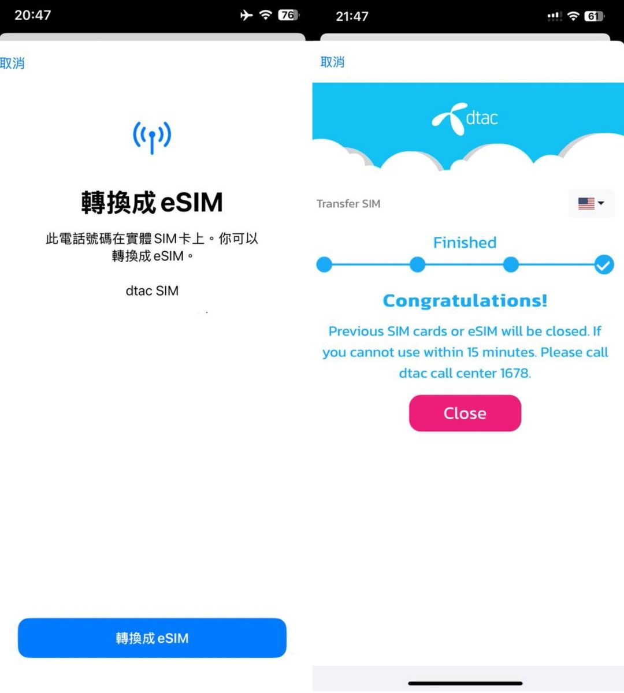
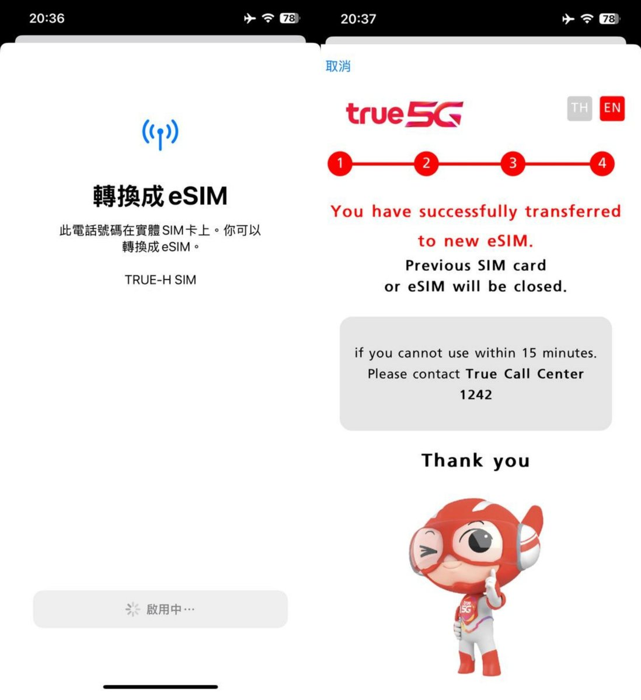
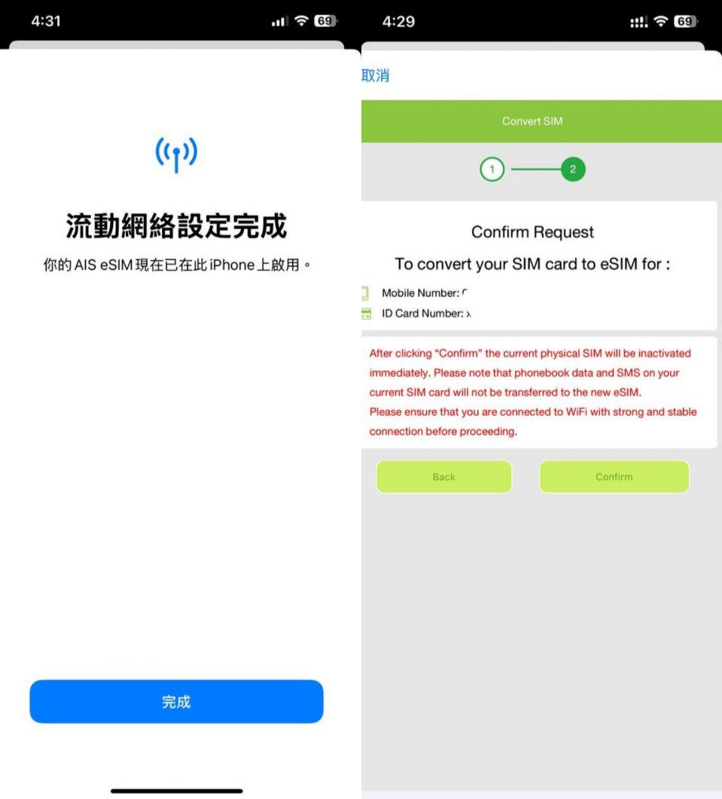

eSTKme最厉害的还得是AAPL LPA MODE，可以让改双卡的外版iPhone恢复eSIM原生管理。这是 2025 新款 eSTK 小众黑科技：让改过双卡的 iPhone 外版机型重新启用 eSIM 功能，堪比断臂重生😂
趁着新年优惠，我去eSTK的新官网购买了新年套装，用优惠码『naixi』还可以接着打折哦。实测开启 APPL LPA Mode 后恢复了所有原生 eSIM 功能，已测试原生扫描二维码下卡，APP 内跳转下卡，点击链接下卡，长按二维码下卡，设置内切卡，捷径切卡均正常工作。
实测 iPhone 专属的 eSIM 功能也恢复正常工作：可将 SIM1 识别为实体卡并支持转换为 eSIM 的配置转移到 eSTK 内，如 AIS、DTAC、RedPocket 支持从别的 iPhone 通过 Quick Transfer 转移配置到eSTK内。
简单说就是eSTK可以代替原本内置但是被因为一些原因人为去除的 eUICC 芯片的工作（暂不支持本来就没有 eSIM 功能的 iPhone），实现可拔插的 iPhone 原生 eSIM。
趁着新年优惠，我去eSTK的新官网购买了新年套装，用优惠码『naixi』还可以接着打折哦。实测开启 APPL LPA Mode 后恢复了所有原生 eSIM 功能，已测试原生扫描二维码下卡，APP 内跳转下卡，点击链接下卡，长按二维码下卡，设置内切卡，捷径切卡均正常工作。
实测 iPhone 专属的 eSIM 功能也恢复正常工作：可将 SIM1 识别为实体卡并支持转换为 eSIM 的配置转移到 eSTK 内，如 AIS、DTAC、RedPocket 支持从别的 iPhone 通过 Quick Transfer 转移配置到eSTK内。
简单说就是eSTK可以代替原本内置但是被因为一些原因人为去除的 eUICC 芯片的工作（暂不支持本来就没有 eSIM 功能的 iPhone），实现可拔插的 iPhone 原生 eSIM。



